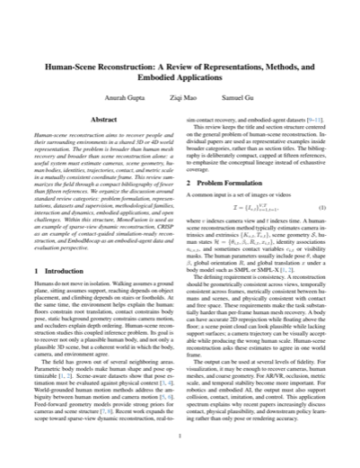

|

|
Human-Scene Reconstruction: A Review of Representations, Methods, and Embodied Applications
Anurag Gupta, Ziqi Mao, Samuel Gu
University of Glasgow
Report
A review report on human-scene reconstruction, covering 3D/4D representations, reconstruction methods, datasets, and embodied applications such as robotics and spatial AI.
|